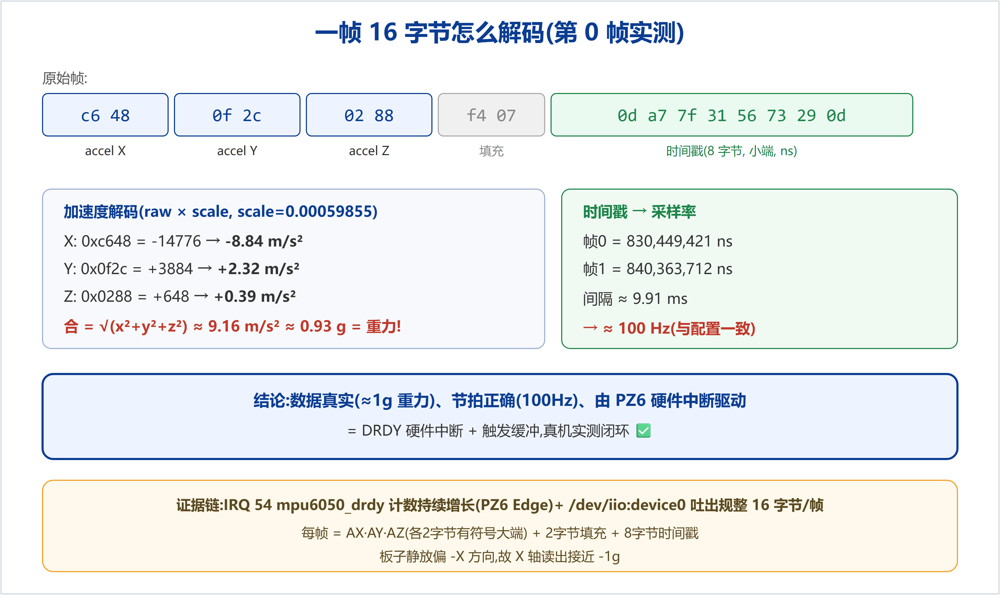

驱动的流式采集路径(芯片 DRDY 硬件中断 → IIO 触发器 → 触发缓冲 → /dev/iio:device0)已在真实硬件上跑通并取得完整证据。至此,MPU-6050 IIO 驱动的两条数据通路——单次读(sysfs)与流式读(缓冲)——全部实测通过。
| 验收项 | 证据 | 结论 |
|---|---|---|
| 硬件中断触发 | IRQ 54 mpu6050_drdy(stm32gpio 第 6 线 = PZ6,Edge)计数持续增长 | ✅ 中断真在驱动采集 |
| 成帧流式输出 | /dev/iio:device0 吐出规整 16 字节/帧 | ✅ 缓冲通路打通 |
| 数据真实 | 解码出 ≈1g 重力,随姿态变化 | ✅ 非乱码 |
| 采样节拍 | 相邻帧时间戳间隔 ≈ 10 ms | ✅ 100 Hz,与配置一致 |
绑定触发器、使能加速度 X/Y/Z + 时间戳通道、开缓冲后,读 /dev/iio:device0:
$ head -c 256 /dev/iio:device0 | hexdump -C 00000000 c6 48 0f 2c 02 88 f4 07 0d a7 7f 31 56 73 29 0d |.H.,.......1Vs).| 00000010 c6 44 0f 5a 02 68 f4 0f c0 ee 16 32 56 73 29 0d |.D.Z.h.....2Vs).| 00000020 c6 34 0f 80 02 46 f4 0f 56 42 ae 32 56 73 29 0d |.4...F..VB.2Vs).| 00000030 c6 2e 0f 6e 02 be f4 11 80 92 45 33 56 73 29 0d |...n......E3Vs).| ... (每行 = 一帧 16 字节,持续流出) $ cat /proc/interrupts | grep mpu6050_drdy 54: 5775 0 stm32gpio 6 Edge mpu6050_drdy ← 持续增长

每帧 16 字节 = AX AY AZ(各 2 字节、有符号、大端)+ 2 字节填充 + 8 字节时间戳(小端,ns)。第 0 帧:X=-14776、Y=3884、Z=648,乘 scale(0.00059855)得 (-8.84, +2.32, +0.39) m/s²,合加速度 ≈ 9.16 m/s² ≈ 0.93 g —— 正是重力(板子静放、偏 -X 方向)。相邻帧时间戳差 ≈ 9.91 ms ≈ 100 Hz,与 SMPLRT_DIV=9 + DLPF(1kHz 基准)配置一致。
面试可一句话讲清:"把 MPU-6050 接入 Linux IIO 子系统,实现单次读与基于硬件数据就绪中断的触发缓冲流式采集,真机 100Hz 验证通过"——并能展开讲清触发器/缓冲/pollfunc 的分工、中断上下半部、以及软硬件边界。
本文为 MPU-6050 IIO 驱动学习的收官里程碑(流式采集实测闭环),承接进阶篇/剖析篇/数据结构篇。系列文档见docs/learning/;配套代码见examples/learning-driver/与drivers/iio/imu/mpu6050/。仓库:github.com/fyy0619-cell/xiangmu